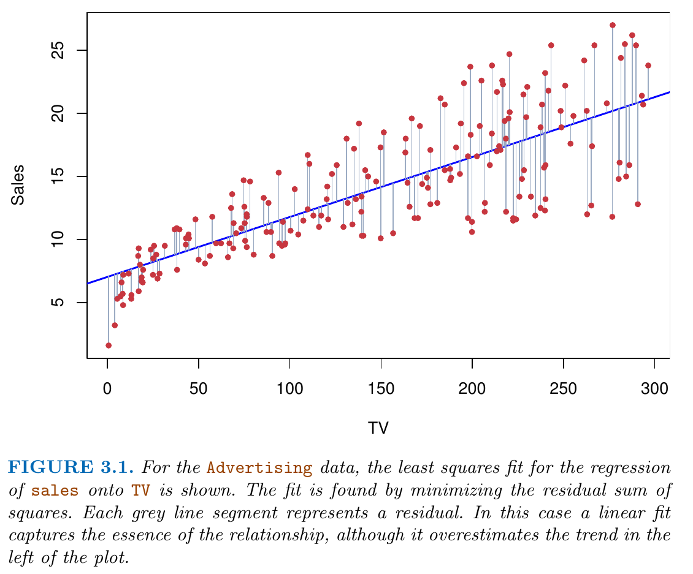
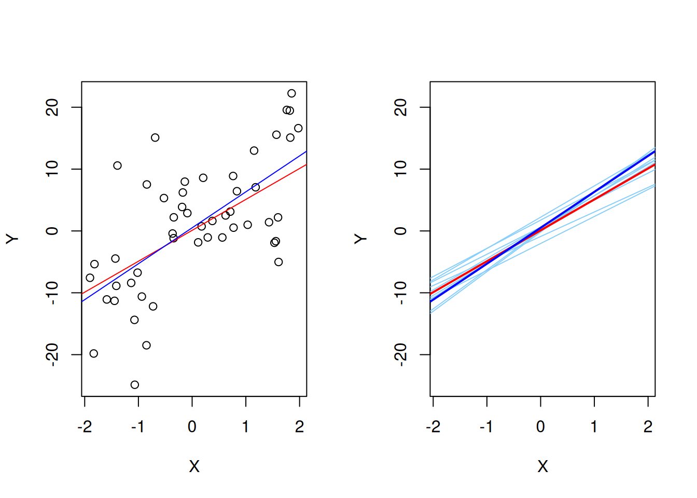

The (multiple) linear regression model is defined by the following assumptions which together describe the relevant theoretical aspects of the underlying data generating process:
Assumption 1: Model and Sampling
Part (a): Linear Model
\[
\begin{align}
Y_i= \underbrace{\sum_{k=0}^p\beta_k X_{ik}}_{=f(X_i)}+\epsilon_i, \quad i=1,\dots,n,
\end{align}
\qquad(5.1)\] where \[
X_{i0}=1
\] for all \(i=1,\dots,n.\)
\(Y_i\) is called “dependent variable” or “outcome variable” or “regressand” or
\(X_{ik}\) is called the \(k\)th “predictor variable” or “regressor” or “explanatory variable” or “control variable.” Each of these names emphasizes a slightly different perspective on \(X_{ik}.\)
It is convenient to write Equation 5.1 using matrix notation \[
\begin{eqnarray*}
Y_i&=&\underset{(1\times (p+1))}{X_i'}\underset{((p+1)\times 1)}{\beta} +\epsilon_i, \quad i=1,\dots,n,
\end{eqnarray*}
\] where \[
X_i=\left(\begin{matrix}X_{i0}\\ \vdots\\ X_{ip}\end{matrix}\right)
\quad\text{and}\quad
\beta=\left(\begin{matrix}\beta_0\\ \vdots\\ \beta_p\end{matrix}\right).
\] Stacking all individual rows \(i=1,\dots,n\) leads to \[
\begin{eqnarray*}\label{LM}
\underset{(n\times 1)}{Y}&=&\underset{(n\times (p+1))}{X}\underset{((p+1)\times 1)}{\beta} + \underset{(n\times 1)}{\epsilon},
\end{eqnarray*}
\] where \[
\begin{equation*}
Y=\left(\begin{matrix}Y_1\\ \vdots\\Y_n\end{matrix}\right),\quad X=\left(\begin{matrix}X_{10}&\dots&X_{1(p+1)}\\\vdots&\ddots&\vdots\\ X_{n0}&\dots&X_{n(p+1)}\\\end{matrix}\right),\quad\text{and}\quad \epsilon=\left(\begin{matrix}\epsilon_1\\ \vdots\\ \epsilon_n\end{matrix}\right).
\end{equation*}
\]
Simple Linear Regression and Polynomial Regression Model
The special case of \(p=1\)\[
Y_i = \beta_0 + \beta_1 X_{i1} + \epsilon_i
\] is called the simple linear regression model. With the simple linear regression model, only straight line fits are possible.
By contrast, with the multiple linear regression model, we can also fit polynomials. For instance, we can define \[
X_{i2} := X_{i1}^2
\] which leads to a quadratic regression model (often used for life-cycle analyses that include the predictor Age\(_i=X_{i1}\)) \[
Y_i = \beta_0 + \beta_1 X_{i1} + \beta_2 X_{i1}^2 + \epsilon_i.
\] Of course, further predictor variables \(X_{i2},\dots,X_{ip}\) can (and should) be added to this model.
The same logic applies to polynomials with higher polynomial degrees \((\geq 2).\) Large polynomial degrees, however, can lead to unstable estimation results.
Note
The assumption \(f(X_i) = X_i'\beta\) may be a useful working model. However, despite what many textbooks might tell us, we seldom believe that the true (unknown) relationship is that simple.
Part (b): Random Sample
We assume that the observed data points \[
((y_{1},x_{10},\dots,x_{1(p+1)}),\dots,(y_{n},x_{n0},\dots,x_{n(p+1)}))
\] are a realization of the training data random sample\[
((Y_{1},X_{10},\dots,X_{1(p+1)}),\dots,(Y_{n},X_{n0},\dots,X_{n(p+1)})).
\]
That is, the \(i\)th observed \(p+2\) dimensional data point \[
(y_{i},x_{i0},\dots,x_{i(p+1)})\in\mathbb{R}^{p+2}
\] is a realization of a \(p+2\) dimensional random variable \[
(Y_{i},X_{i0},\dots,X_{i(p+1)})\in\mathbb{R}^{p+2},
\] where
\((Y_{i},X_{i0},\dots,X_{i(p+1)})\) has the identical \(p+2\) dimensional distribution for all \(i=1,\dots,n.\)
\((Y_{i},X_{i0},\dots,X_{i(p+1)})\) is independent of \((Y_{j},X_{j0},\dots,X_{j(p+1)})\) for all \(i\neq j=1,\dots,n.\)
Note
Due to Equation 5.1, this i.i.d. assumption is equivalent to assuming that the multivariate random variables \[
(\epsilon_i,X_{i0},\dots,X_{i(p+1)})\in\mathbb{R}^{p+2}
\] are i.i.d. across \(i=1,\dots,n\).
Caution
Remark: Often, we do not use a different notation for observed realizations \((y_{i},x_{i0},\dots,x_{i(p+1)})\in\mathbb{R}^{p+2}\) and for the corresponding random variable \((Y_{i},X_{i0},\dots,X_{i(p+1)})\in\mathbb{R}^{p+2}\) since often both interpretations (random variable and its realizations) can make sense in the same statement and then it depends on the considered context whether the random variables point if view or the realization point of view applies.
This assumption demands that the mean of the random error term \(\epsilon_i\) is zero irrespective of the realizations of \(X_i\). This exogeneity assumption is also called
“orthogonality assumption” or
“mean independence assumption.”
Note
Together with the random sample assumption (Assumption 1, Part (b)) Equation 5.2 even implies strict exogeneity\[
E(\epsilon|X) = \underset{(n\times 1)}{0},
\] since we have independence across \(i=1,\dots,n\). Under strict exogeneity, the mean of the random error vector\(\epsilon\in\mathbb{R}^n\) is zero irrespective of the realizations of the \((n\times (p+1))\)-dimensional random predictor matrix \(X.\)
Example: Independence between error term and predictors
Let
\(E(\epsilon_i)=0\) and
\(\epsilon_i\) be independent of \(X_i\)
Here the assumption of exogeneity is fulfilled since by the independence between \(\epsilon_i\) and \(X_i\) we have that \[
E(\epsilon_i|X_i) = E(\epsilon_i)
\] and by assumption \(E(\epsilon_i)=0\) such that \[
E(\epsilon_i|X_i) = 0.
\]
Note: The assumption \(E(\epsilon_i)=0\) is not critical (i.e. not restrictive) due to the intercept term in Equation 5.2.
Example: Heteroskedastic Error
Let
\(\epsilon_i\sim\mathcal{N}(0,\sigma_i^2),\) where
\(\sigma_i = |X_{i1}|\)
Here the assumption of exogeneity is fulfilled since realizations of \(X_i\) do not affect the mean of \(\epsilon_i,\) thus \[
E(\epsilon_i|X_i) = 0.
\]
However, \(\epsilon_i\) and \(X_i\) are not independent of each other, since the conditional variance of \(\epsilon_i\) is a function of \(X_{i1}\)\[
Var(\epsilon_i|X_i) = |X_{i1}|^2.
\]
Assumption 3: Rank Condition (no perfect multicollinearity)
\[
\begin{align*}
\operatorname{rank}(X)&=(p+1)\quad\text{a.s.}\\
\Leftrightarrow P\big(\operatorname{rank}(X)&=(p+1)\big)=1
\end{align*}
\] This assumption demands that, with probability one, no predictor variable \(X_{k}\in\mathbb{R}^n\) is linearly dependent of the others. (This is the literal translation of the “almost surely (a.s.)” concept.)
Note: The assumption implies that \(n\geq (p+1),\) since \[
\operatorname{rank}(X)\leq \min\{n,(p+1)\}\quad(a.s.)
\]
This rank assumption is a bit dicey and its violation belongs to one of the classic problems in applied econometrics (keywords: dummy variable trap, multicollinearity, variance inflation). The violation of this assumption harms any economic interpretation since we cannot disentangle the explanatory variables’ individual effects on \(Y\). Therefore, this assumption is also often called an identification assumption.
Tip
Under Assumption 3, we have that \[
\operatorname{rank}(X)=(p+1)\quad\text{(a.s.)}
\]
This implies that the \(((p+1)\times (p+1))\)-dimensional matrix \(X'X\) has full rank, i.e. that \[
\operatorname{rank}(X'X)=(p+1)\quad\text{(a.s.)}
\]
Thus \((X'X)\) is invertible; i.e. there exists a \(((p+1)\times (p+1))\)-dimensional matrix \((X'X)^{-1}\) such that \[
(X'X)(X'X)^{-1} = (X'X)^{-1}(X'X) = I_{(p+1)}.
\]
Assumption 4: Error distribution
There are different more or less restrictive assumptions. Some of the most common ones are the following:
Conditional distribution with sufficiently many moments:\[
\epsilon_i|X_i \sim f_{\epsilon|X}
\] for all \(i=1,\dots,n\) and for any distribution \(f_{\epsilon|X}\) with two (or more) finite moments.
Conditional normal distribution:\[
\epsilon_i|X_i \sim \mathcal{N}(0,\sigma^2(X_i))
\] for all \(i=1,\dots,n\).
Independence between error and predictors:\(\epsilon_i\sim f_\epsilon\) for all \(i=1,\dots,n\) such that \(f_\epsilon=f_{\epsilon|X}\) and such that \(f_\epsilon\) has two (or more) finite moments.
Independence between error and predictors and normality: As above, but with \(f_\epsilon=\mathcal{N}(0,\sigma^2)\).
Spherical errors: The conditional distributions of \(\epsilon_i|X_i\) may generally depend on \(X_i\) for all \(i=1,\dots,n,\) but only such that \[
E(\epsilon|X)=\underset{(n\times 1)}{0}
\] and \[
\begin{align*}
&\underset{(n\times n)}{Var\left(\epsilon|X\right)}=\\[2ex]
& = \left(\begin{matrix}
Var(\epsilon_1|X)&Cov(\epsilon_1,\epsilon_2|X)&\dots&Cov(\epsilon_1,\epsilon_n|X)\\
Cov(\epsilon_2,\epsilon_1|X)&Var(\epsilon_2|X)&\dots&Cov(\epsilon_2,\epsilon_n|X)\\
\vdots&\vdots&\ddots&\vdots\\
Cov(\epsilon_n,\epsilon_1|X)&Cov(\epsilon_n,\epsilon_2|X)&\dots&Var(\epsilon_n|X)
\end{matrix}\right)\\[2ex]
& = \left(\begin{matrix}
\sigma^2&0&\dots&0\\
0&\sigma^2&\dots&0\\
\vdots&\vdots&\ddots&\vdots\\
0&0&\dots&\sigma^2
\end{matrix}\right)
= \sigma^2 I_n,
\end{align*}
\] where \(I_n\) denotes the \((n\times n)\) identity matrix with ones on the diagonal and zeros else. Thus, under the spherical errors assumption, one has, for all possible realizations of \(X\), that:
uncorrelated:\(Cov(\epsilon_i,\epsilon_j|X)=0\) for all \(i=1,\dots,n\) and all \(j=1,\dots,n\) such that \(i\neq j\)
homoskedastic:\(Var(\epsilon_i|X)=\sigma^2\) for all \(i=1,\dots,n\)
All four Assumptions 1-4 must hold for doing inference using the (multiple) linear regression model.
Homoskedastic versus Heteroskedastic Error Terms
The i.i.d. assumption is not as restrictive as it may seem on first sight. It allows for dependence between \(\epsilon_i\) and \((X_{i0},\dots,X_{ip})\in\mathbb{R}^{p+1}\). That is, the error term \(\epsilon_i\) can have a conditional distribution which depends on \((X_{i0},\dots,X_{i(p+1)}).\)
The exogeneity assumption (Assumption 2: Exogeneity) requires that the conditional mean of \(\epsilon_i\) is independent of \(X_i\). Besides this, dependencies between \(\epsilon_i\) and \(X_{i0},\dots,X_{i(p+1)}\) are allowed. For instance, the variance of \(\epsilon_i\) can be a function of \(X_{i0},\dots,X_{i(p+1)}.\) If this is the case, \(\epsilon_i\) is said to be “heteroskedastic.”
Heteroskedastic error terms: The conditional variances \[
Var(\epsilon_i|X_i=x_i)=\sigma^2(x_i)
\] are a non-constant function \(\sigma^2(x_i)>0\) of the realizations \(X_i=x_i.\)
Homoskedastic error terms: The conditional variances \[
Var(\epsilon_i|X_i=x_i)=\sigma^2
\] are constant \(\sigma^2>0\) for every possible realization \(X_i=x_i.\)
Example: Heteroskedastic Error
\[
\epsilon_i|X_i\sim \mathcal{U}[-0.5|X_{i2}|, 0.5|X_{i2}|],
\] with \[
X_{i2}\sim \mathcal{U}[-4,4]
\] for all \(i=1,\dots,n,\) where \(\mathcal{U}[a,b]\) denotes the uniform distribution over \([a,b].\)
This error term is mean independent of \(X_i\) since \(E(\epsilon_i|X_i)=0\), but it has a heteroskedastic conditional variance since \[
Var(\epsilon_i|X_i)=\frac{1}{12}X_{i2}^2
\] depends on \(X_{i2}.\)
Example: Homoskedastic Error
\[
\epsilon_i\sim{\mathcal N} (0, \sigma^2)
\] for all \(i=1,\dots,n.\) Here, the conditional variance of the error terms \(\epsilon_i\) given \(X_i\)\[
Var(\epsilon_i|X_i)=Var(\epsilon_i)=\sigma^2
\] are equal to the constant \(\sigma^2>0\) for all \(i=1,\dots,n\) and for every possible realization of \(X_i.\)
5.2 Deriving the Expression of the OLS Estimator
We derive the expression for the OLS estimator \[
\hat\beta=(\hat\beta_0,\dots,\hat\beta_p)'\in\mathbb{R}^{p+1}
\] as the vector-valued minimizing argument of the sum of squared residuals, \[
\operatorname{RSS}(b)=\sum_{i=1}^n\big(\underbrace{Y_i-X_i'b}_{\text{$i$th residual}}\big)^2
\] with \(b\in\mathbb{R}^K\), for a given sample \[
((Y_1,X_1),\dots,(Y_n,X_n)).
\]
Using matrix/vector notation we can write \(S_n(b)\) as \[
\begin{align*}
\operatorname{RSS}(b)
&=\sum_{i=1}^n(Y_i-X_i'b)^2\\[2ex]
&=(Y-X b)^{\prime}(Y-X b)\\[2ex]
&=Y^{\prime}Y-2 Y^{\prime} X b+b^{\prime} X^{\prime} X b.
\end{align*}
\] To find the minimizing argument \[
\hat\beta = \arg\min_{b\in\mathbb{R}^{p+1}}\operatorname{RSS}(b)
\] we compute the vector containing all partial derivatives \[
\begin{align*}
\underset{((p+1)\times 1)}{\frac{\partial \operatorname{RSS}(b)}{\partial b}} &=-2\left(X^{\prime}Y -X^{\prime} Xb\right).
\end{align*}
\] Setting each partial derivative to zero leads to \((p+1)\) linear equations (“normal equations”) in \((p+1)\) unknowns. This linear system of equations defines the OLS estimates, \(\hat{\beta}\), for a given dataset: \[
\begin{align*}
-2\left(X^{\prime}Y -X^{\prime} X\hat{\beta}\right)
&=\underset{((p+1)\times 1)}{0}\\[2ex]
X^{\prime} X\hat{\beta}
&=\underset{((p+1)\times 1)}{X^{\prime}Y}.
\end{align*}
\] From our full rank assumption (Assumption 3) it follows that \(X^{\prime}X\) is an invertible \(((p+1)\times (p+1))\)-dimensional matrix which allows us to solve the equation system by \[
\begin{align*}
\underset{((p+1)\times 1)}{\hat{\beta}} &=\left(X^{\prime} X\right)^{-1} X^{\prime} Y.
\end{align*}
\]
The following codes computes the estimate \(\hat{\beta}\) for a given dataset with \(X_i\in\mathbb{R}^{p+1}\), \(p=2\).
# Some given dataX_1<-c(1.9,0.8,1.1,0.1,-0.1,4.4,4.6,1.6,5.5,3.4)X_2<-c(66, 62, 64, 61, 63, 70, 68, 62, 68, 66)Y<-c(0.7,-1.0,-0.2,-1.2,-0.1,3.4,0.0,0.8,3.7,2.0)dataset<-data.frame("X_1"=X_1, "X_2"=X_2, "Y"=Y)## Compute the OLS estimationlmobj<-lm(Y~X_1+X_2, data =dataset)## Plot sample regression surfacelibrary("scatterplot3d")# library for 3d plotsplot3d<-scatterplot3d(x =X_1, y =X_2, z =Y, angle =33, scale.y =0.8, pch =16, color ="red", xlab =expression(X[1]), ylab =expression(X[2]), main ="OLS Regression Surface")plot3d$plane3d(lmobj, lty.box ="solid", col=gray(.5), draw_polygon=TRUE)
Special Case: Simple Linear Regression Model
For a given observed realization of the training data random sample \[
(x_1,y_1),\dots,(x_n,y_n)
\] we choose \(\hat\beta_0\) and \(\hat\beta_1\) such that the Residual Sum of Squares criterion is minimized: \[
\begin{align*}
\operatorname{RSS}\equiv \operatorname{RSS}(\hat{\beta}_0,\hat{\beta_1})
& = e_1^2 + \dots + e_n^2\\[2ex]
&=\sum_{i=1}^n\left(y_i - \left(\hat\beta_0 + \hat\beta_1x_i\right)\right)^2\\[2ex]
&=\sum_{i=1}^n\left(y_i - \hat{y}_i\right)^2
\end{align*}
\] The minimizers are \[
\hat\beta_1=\frac{\sum_{i=1}^n(x_i-\bar{x})(y_i-\bar{y})}{\sum_{i=1}^n(x_i-\bar{x})^2}
\] and \[
\hat\beta_0=\bar{y} - \hat\beta_1\bar{x},
\] where \(\bar{y}=\frac{1}{n}\sum_{i=1}^ny_i\) and \(\bar{x}=\frac{1}{n}\sum_{i=1}^nx_i\).

Some Quantities of Interest
Predicted values and residuals.
The (OLS) predicted values: \[
\hat{Y}_i=X_i'\hat\beta, \quad i=1,\dots,n
\] The \((n\times 1)\) vector of predicted values \[
\begin{align*}
\hat{Y} = \left(\begin{matrix}\hat{Y}_1\\\hat{Y}_2\\ \vdots\\ \hat{Y}_n\end{matrix}\right)
&=X\hat{\beta}\\[-2ex]
&=\underbrace{X(X'X)^{-1}X'}_{=P_X}Y\\[2ex]
&=P_X Y
\end{align*}
\]
The matrix \[
P_X=X(X'X)^{-1}X'
\] is the \((n\times n)\)projection matrix that projects any vector from \(\mathbb{R}^n\) into the column space spanned by the column vectors of \(X\) and \[
M_X=I_n-X(X'X)^{-1}X'=I_n-P_X
\] is the associated \((n\times n)\)orthogonal projection matrix that projects any vector from \(\mathbb{R}^n\) into the vector space that is orthogonal to that spanned by the column vectors of \(X.\)
5.3 Assessing the Accuracy of the Model fit \(\hat{f}\)
The larger the proportion of the explained variance, the better is the fit of the estimated model \(\hat{f}\) to the training data. This motivates the definition of the so-called \(R^2\) coefficient of determination: \[
\begin{eqnarray*}
R^2
%&=\frac{\sum_{i=1}^n\left(\hat{Y}_i-\bar{\hat{Y}}\right)^2}{\sum_{i=1}^n\left(Y_i-\bar{Y}\right)^2}\\[2ex]
&=1-\frac{\sum_{i=1}^ne_i^2}{\sum_{i=1}^n\left(Y_i-\bar{Y}\right)^2}\\[2ex]
&=1-\frac{\operatorname{RSS}}{\operatorname{TSS}}
\end{eqnarray*}
\] with \[
\begin{align*}
\operatorname{RSS}\equiv \operatorname{RSS}(\hat\beta)=\sum_{i=1}^n\left(y_i-x_i'\hat\beta\right)^2=\sum_{i=1}^ne_i^2
\end{align*}
\] and \[
\begin{align*}
\operatorname{TSS}=\sum_{i=1}^n\left(y_i-\bar{y}\right)^2.
\end{align*}
\]
\(\operatorname{TSS}\) “Total Sum of Squares”
\(\operatorname{RSS}\) “Residual Sum of Squares”
Obviously, we have that \(0\leq R^2\leq 1\).
The closer \(R^2\) lies to \(1\), the better is the fit of the model to the observed training data.
In tendency an accurate model has …
a low residual standard error \(\operatorname{RSE}\)\[
\operatorname{RSE}=\sqrt{\frac{\operatorname{RSS}}{n-(p+1)}}
\]
a high \(R^2\)
\[
R^2=\frac{\operatorname{TSS}-\operatorname{RSS}}{\operatorname{TSS}}=1-\frac{\operatorname{RSS}}{\operatorname{TSS}},
\] where \(0\leq R^2\leq 1.\)
Caution
Cautionary Note Nr 1: Do not forget that there is a irreducible error\(Var(\epsilon)=\sigma^2>0\). Thus
very low \(\operatorname{RSE}\) values \((\operatorname{RSE}\approx 0)\) and
very high \(R^2\) values \((R^2\approx 1)\)
can be warning signals indicating overfitting. While overfitting typically does not happen with a simple linear regression model, it can happen with a multiple linear regression model.
Cautionary Note Nr 2: The \(R^2\) and \(\operatorname{RSE}\) are only based on training data. In Chapter 2, we have seen that a proper assessment of the model accuracy needs to take into account test data.
\(R^2\) and correlation coefficient
In the case of the simple linear regression model, \(R^2\) equals the squared sample correlation coefficient between \(Y\) and \(X\), \[
R^2 = r_{yx_1}^2,
\] where \[
r_{yx_1}=\frac{\sum_{i=1}^n(x_{i1}-\bar{x}_1)(y_i-\bar{y})}{\sqrt{\sum_{i=1}^n(x_{i1}-\bar{x}_1)^2}\sqrt{\sum_{i=1}^n(y_i-\bar{y})^2}},
\] where \(\bar{x}_1=n^{-1}\sum_{i=1}^nx_{i1}.\)
Tip
In the multiple linear regression model \(Y_i=\beta_0+\sum_{j=1}^p\beta_jX_{ij}+\epsilon_i,\) the \(R^2\) equals the squared correlation between response and the fitted values: \[
R^2=r^2_{y\hat{y}}
\] with \[
r_{y\hat{y}}=\frac{\sum_{i=1}^n(y_i-\bar{y})(\hat{y}_i-\bar{\hat{y}})}{\sqrt{\sum_{i=1}^n(y_i-\bar{y})^2}\sqrt{\sum_{i=1}^n(\hat{y}_i-\bar{\hat{y}})^2}},
\] where \(\bar{y}=n^{-1}\sum_{i=1}^ny_{i}.\)
Caution
A high/low \(R^2\) value only means that the predictors have high/low predictive power with respect to the training data.
A high/low \(R^2\) does not mean a validation/falsification of the estimated model. Any econometric model needs a plausible explanation from relevant economic theory.
The most often criticized disadvantage of the \(R^2\) is that additional regressors (relevant or not) will increase the \(R^2\). The below R-codes demonstrates this problem.
set.seed(123)n<-100# Sample sizeX<-runif(n, 0, 10)# Relevant X variableX_ir<-runif(n, 5, 20)# Irrelevant X variableerror<-rt(n, df =10)*10# True (usually unknown) errorY<-1+5*X+error# Y variablelm1<-summary(lm(Y~X))# Correct OLS regression lm2<-summary(lm(Y~X+X_ir))# OLS regression with X_ir lm1$r.squared<lm2$r.squared
[1] TRUE
So, \(R^2\) increases here even though X_ir is a completely irrelevant explanatory variable.
Because of this, the \(R^2\) cannot be used as a criterion for model selection. Possible solutions are given by penalized criterions such as the so-called adjusted\(R^2\), \(\overline{R}^2,\) defined as \[
\begin{eqnarray*}
\overline{R}^2&=&1-\frac{\frac{1}{n-(p+1)}\sum_{i=1}^ne^2_i}{\frac{1}{n-1}\sum_{i=1}^n\left(y_i-\bar{y}\right)^2}\leq R^2%\\
\end{eqnarray*}
\] The adjustment is in terms of the degrees of freedom \(n-(p+1)\).
round(lm1$adj.r.squared, digits =3)# model without X_ir
[1] 0.569
round(lm2$adj.r.squared, digits =3)# model with X_ir
[1] 0.564
5.4 Assessing the Accuracy of the Coefficient Estimators \(\hat{\beta}\)
5.4.1 Bias of \(\hat{\beta}\)
Under the Assumptions 1-4, once can show that the OLS estimator \[
\hat\beta = (X'X)^{-1}X'Y
\] is unbiased, i.e. \[
\operatorname{Bias}(\hat\beta) = E(\hat\beta) - \beta = \underset{((p+1)\times 1)}{0}.
\] That is, on average \(\hat\beta\) equals \(\beta.\)
This can be shown as following:
Observe that \[
\hat\beta=(X'X)^{-1}X'Y
\] consists of two multivariate random variables \(X\in\mathbb{R}^{n\times(p+1)}\) and \(Y\in\mathbb{R}^n.\) Thus one needs to show first the conditional unbiasedness of \(\hat\beta\) given \(X\) which effectively allows us to focus on randomness due to \(\epsilon,\) \[
\begin{align*}
\operatorname{Bias}(\hat\beta|X)
&= E(\hat\beta|X) - \beta \\[2ex]
&= E((X'X)^{-1}X'\underbrace{Y}_{=X\beta+\epsilon}|X) - \beta \\[2ex]
&= E((X'X)^{-1}X'(X\beta+\epsilon)|X) - \beta \\[2ex]
&= E(\underbrace{(X'X)^{-1}X'X}_{=I_K}\beta|X) + E((X'X)^{-1}X'\epsilon|X) - \beta \\[2ex]
&= \underbrace{E(\beta|X)}_{=\beta} + \underbrace{E((X'X)^{-1}X'\epsilon|X)}_{=(X'X)^{-1}X'E(\epsilon|X)} - \beta \\[2ex]
&= (X'X)^{-1}X'\underbrace{E(\epsilon|X)}_{=0} =\underset{(K\times 1)}{0}
\end{align*}
\] Thus \(\hat\beta\) is unbiased conditionally on \(X\)\[
\operatorname{Bias}(\hat\beta|X) = 0.
\]
From this if follows, by the iterated law of expectations, that the OLS estimator is also unconditionally unbiased, i.e. \[
\operatorname{Bias}(\hat\beta) = E\left(\operatorname{Bias}(\hat\beta|X)\right) = E(0) = 0.
\]
5.4.2 Standard Error of \(\hat{\beta}_j\)
The standard error of \(\hat{\beta}_j,\) for each \(j=0,\dots,p,\) is given by \[
\operatorname{SE}(\hat\beta_j|X)=\sqrt{Var(\hat\beta_j|X)},
\] where \[
Var(\hat\beta_j|X) = \left[Var(\hat\beta|X)\right]_{(j,j)}
\] denotes the \(j\)th diagonal element of the symmetric \((p+1)\times (p+1)\) variance-covariance matrix \[
\begin{align*}
&Var(\hat\beta|X)=\\[2ex]
&=\begin{pmatrix}
Var(\hat\beta_0|X)&Cov(\hat\beta_0,\hat\beta_1|X)&\cdots&Cov(\hat\beta_0,\hat\beta_{p}|X)\\
Cov(\hat\beta_1,\hat\beta_0|X)&Var(\hat\beta_1|X)& &Cov(\hat\beta_1,\hat\beta_{p}|X)\\
\vdots &&\ddots&\\
Cov(\hat\beta_p,\hat\beta_0|X)&Cov(\hat\beta_p,\hat\beta_1|X)&\cdots&Var(\hat\beta_{p}|X)\\
\end{pmatrix}
\end{align*}
\]
Thus, to compute a useful explicit expression for \[
\operatorname{SE}(\hat\beta_j|X)=?,
\] we need to compute an explicit expression for the symmetric \((p+1)\times(p+1)\) variance-covariance matrix \(Var(\hat\beta|X).\)
Let us derive the general explicit expression for \(Var(\hat\beta|X).\)
Note that \[
\begin{align*}
\hat{\beta}
&=(X'X)^{-1}X'Y\\[2ex]
&\text{Using that $Y=X\beta + \epsilon$:}\\[2ex]
&=(X'X)^{-1}X'(X\beta + \epsilon)\\[2ex]
&=\underbrace{(X'X)^{-1}X'X\beta}_{=\beta} + (X'X)^{-1}X'\epsilon
\end{align*}
\] This leads to the so-called sampling error expression \[
\hat{\beta} - \beta = (X'X)^{-1}X'\epsilon.
\] With this, we can derive the general explicit expression for \(Var(\hat\beta|X).\)\[
\begin{align*}
&Var(\hat\beta|X)=\\[2ex]
&=Var(\hat\beta - \beta|X)\\[2ex]
&\text{Using the sampling error expression:}\\[2ex]
&=Var((X'X)^{-1}X'\epsilon|X)\\[2ex]
&=E\Big[\big((X'X)^{-1}X'\epsilon-\underbrace{E((X'X)^{-1}X'\epsilon|X)}_{=0}\big)\times\\[2ex]
&\phantom{=\Big(}\,\times\big((X'X)^{-1}X'\epsilon-\underbrace{E((X'X)^{-1}X'\epsilon|X)}_{=0}\big)'|X\Big]\\[2ex]
&=E\left[((X'X)^{-1}X'\epsilon)((X'X)^{-1}X'\epsilon)'|X\right]\\[2ex]
&=E\left[(X'X)^{-1}X'\epsilon\epsilon' X(X'X)^{-1}|X\right]\\[2ex]
&=\;\;\;(X'X)^{-1}X'\underbrace{E\left(\epsilon\epsilon'|X\right)}_{=Var(\epsilon|X)}X(X'X)^{-1}
\end{align*}
\] That is, the explicit expression for \(Var(\hat\beta|X)\) depends on the explicit form of the symmetric \((n\times n)\) matrix \(Var(\epsilon|X)\)\[
\begin{align*}
&Var(\epsilon|X)=\\[2ex]
&=\begin{pmatrix}
Var(\epsilon_1|X)&Cov(\epsilon_1,\epsilon_2|X)&\cdots&Cov(\epsilon_1,\epsilon_n|X)\\
Cov(\epsilon_2,\epsilon_1|X)&Var(\epsilon_2|X)& &Cov(\epsilon_2,\epsilon_n|X)\\
\vdots &&\ddots&\\
Cov(\epsilon_n,\epsilon_1|X)&Cov(\epsilon_n,\epsilon_2|X)&\cdots&Var(\epsilon_n|X)\\
\end{pmatrix}
\end{align*}
\]
The explicit form of the symmetric \((n\times n)\) matrix \(Var(\epsilon|X)\) depends on our (hopefully correct) assumption on the error-term distribution (Assumption 4).
5.4.2.1 Case of Spherical (Homoskedastic, Uncorrelated) Errors
We can estimate the homoskedastik error term variance \(\sigma^2\) using the Residual Standard Error: \[
\begin{align*}
\hat\sigma = \operatorname{RSE}
&=\sqrt{\frac{\operatorname{RSS}}{n-(p+1)}}\\[2ex]
&=\sqrt{ \frac{1}{n-(p+1)} \sum_{i=1}^n e_i^2}.
\end{align*}
\]
Summing up:
In the case of spherical (homoskedastic and uncorrelated) error terms the standard error of \(\beta_j\) is \[
\operatorname{SE}(\beta_j|X) = \sqrt{\left[\sigma^2 \left(X'X\right)^{-1}\right]_{(j,j)}}.
\] The above expression is the infeasible (since \(\sigma^2\) is typically unknown) population version of the standard error. We can estimate this population version using the empirical standard error \[
\widehat{\operatorname{SE}}(\beta_j|X) = \sqrt{\left[\hat{\sigma}^2 \left(X'X\right)^{-1}\right]_{(j,j)}}.
\]
This is the default version for computing the standard error in statistical software packages such as R.
Call:
lm(formula = Y ~ X_1 + X_2)
Residuals:
Min 1Q Median 3Q Max
-39.071 -7.138 -0.575 9.570 33.368
Coefficients:
Estimate Std. Error t value Pr(>|t|)
(Intercept) 1.0112 4.2440 0.238 0.812
X_1 5.1954 0.4529 11.472 < 2e-16 ***
X_2 -4.7001 0.6690 -7.026 2.95e-10 ***
---
Signif. codes: 0 '***' 0.001 '**' 0.01 '*' 0.05 '.' 0.1 ' ' 1
Residual standard error: 12.84 on 97 degrees of freedom
Multiple R-squared: 0.6565, Adjusted R-squared: 0.6494
F-statistic: 92.68 on 2 and 97 DF, p-value: < 2.2e-16
5.4.2.2 Case of Heteroskedastic, but Uncorrelated Errors
If \[
\begin{align*}
Var(\epsilon|X)
&=
\begin{pmatrix}
\sigma_1^2 & 0 & \cdots & 0\\
0 & \sigma_2^2 & \cdots & 0\\
\vdots & \vdots & \ddots & 0\\
0 & 0 & \cdots & \sigma_n^2\\
\end{pmatrix}
&=\operatorname{diag}(\sigma_1^2,\sigma_2^2,\dots,\sigma_n^2),
\end{align*}
\] then \[
\begin{align*}
&Var(\hat\beta|X)=\\[2ex]
&=(X'X)^{-1}X' \left(Var(\epsilon|X)\right) X(X'X)^{-1}\\[2ex]
&=(X'X)^{-1} \left(X'\left(\operatorname{diag}(\sigma_1^2,\dots,\sigma_n^2) \right) X\right) (X'X)^{-1}\\[2ex]
&=(X'X)^{-1} \left(\sum_{i=1}^n \sigma_i^2 X_i X_i'\right) (X'X)^{-1}\\[2ex]
\end{align*}
\] Thus, the symmetric \((p+1)\times(p+1)\) variance-covariance matrix \(Var(\hat\beta|X)\) keeps its “sandwich form”, where the inner part of the sandwich \[
\left(\sum_{i=1}^n \sigma_i^2 X_i X_i'\right)
\] is typically unknown, since \(\sigma_1^2,\sigma_2^2,\dots,\sigma_n^2\) are typically unknown.
There are different, so-called Heteroskedasticity Consistent (HC) estimators to estimate the unknown expression \[
\left(\sum_{i=1}^n \sigma_i^2 X_i X_i'\right).
\]
The statistic \(h_i:=[P_X]_{ii}\) is called the leverage statistic of \(X_i,\) where
\(1/n\leq h_i\leq 1\) and
\(\bar{h}=n^{-1}\sum_{i=1}^nh_i=K/n\).
Observations \(X_i\) with leverage statistics \(h_i\) that greatly exceed the average leverage value \(K/n\) are referred to as “high leverage” observations. High leverage observations \(X_i\) are observations that are far away from all other observations \(X_j\), \(i\neq j=1,\dots,n.\)
High leverage observations \(X_i\) have the potential to distort the estimation results, \(\hat\beta_n\). Indeed, a high leverage observation \(X_i\) will have an distorting effect on the estimation results if the absolute value of the corresponding residual \(|\hat{\varepsilon}_i|\) is unusually large—such observations are called influential outliers. Such observations increase the estimation uncertainty.
General idea of the HC2-HC4 estimators is to increase the estimated variance in order to account for the effects of influential outliers. The residuals \(\hat\varepsilon_i\) belonging to \(X_i\) values that have a large leverage \(h_i\) receive a higher weight and thus increase the value of \(\widehat{E}(\varepsilon^2_iX_iX_i').\) This strategy takes into account increased estimation uncertainties due to single influential outliers.
set.seed(123)n<-100# Sample sizeX_1<-runif(n, 0, 10)# Predictor variable X_1X_2<-rnorm(n, -5, 2)# Predictor variable X_2error<-rt(n, df =10)*abs(X_2)# True (usually unknown) heteroskedastic errorY<-1+5*X_1-5*X_2+error# Y variable## Package for computing robust variance estimationslibrary("sandwich")# vcovHC(), ## Package for producing an OLS output table (etc.)suppressMessages(library("lmtest"))# coeftest## Estimate the linear regression model parameterslm_obj<-lm(Y~X_1+X_2)vcovHC3_mat<-sandwich::vcovHC(lm_obj, type="HC3")lmtest::coeftest(lm_obj, vcov =vcovHC3_mat)
t test of coefficients:
Estimate Std. Error t value Pr(>|t|)
(Intercept) 3.16955 2.17658 1.4562 0.1486
X_1 4.92390 0.22302 22.0784 <2e-16 ***
X_2 -4.57382 0.34716 -13.1748 <2e-16 ***
---
Signif. codes: 0 '***' 0.001 '**' 0.01 '*' 0.05 '.' 0.1 ' ' 1
## Note: The HC3-Robust SE estimates are: round(sqrt(diag(vcovHC3_mat)), digits =5)
The linear regression model assumes a linear relationship between \(Y\) and the predictor(s) \(X\).
The simple (only one predictor) linear regression model: \[
Y\approx \beta_0 + \beta_1 X
\]
For instance,
sales\(\approx \beta_0 + \beta_1\)TV
6.1.1 Estimating the Regression Coefficients
Let \[
(X_{1},Y_1),\dots,(X_{n},Y_n)
\] denote a training data random sample. I.e. \[
(X_{i},Y_i)\overset{iid}{\sim}(X,Y),\quad\text{for all}\quad i=1,\dots,n.
\] Moreover, let \[
Y_i=\beta_0 + \beta_1 X_i +\epsilon_i \quad\text{for all}\quad i=1,\dots,n,
\qquad(6.1)\] where
\(\epsilon_i\) and \(X_i\) are independent from each other for all \(i=1,\dots,n\)
\(E(\epsilon_i)=0\) for all \(i=1,\dots,n\)
\(Var(\epsilon_i)=\sigma^2>0\) is constant for all \(i=1,\dots,n\)
Note
The assumption \(f(X) = \beta_0 + \beta_1 X\) may be a useful working model. However, despite what many textbooks might tell us, we seldom believe that the true (unknown) relationship is that simple.
For a given observed realization of the training data random sample \[
(x_1,y_1),\dots,(x_n,y_n)
\] we choose \(\hat\beta_0\) and \(\hat\beta_1\) such that the Residual Sum of Squares criterion is minimized: \[
\begin{align*}
\operatorname{RSS}\equiv \operatorname{RSS}(\hat{\beta}_0,\hat{\beta_1})
& = e_1^2 + \dots + e_n^2\\[2ex]
&=\sum_{i=1}^n\left(y_i - \left(\hat\beta_0 + \hat\beta_1x_i\right)\right)^2\\[2ex]
&=\sum_{i=1}^n\left(y_i - \hat{y}_i\right)^2
\end{align*}
\] The minimizers are \[
\hat\beta_1=\frac{\sum_{i=1}^n(x_i-\bar{x})(y_i-\bar{y})}{\sum_{i=1}^n(x_i-\bar{x})^2}
\] and \[
\hat\beta_0=\bar{y} - \hat\beta_1\bar{x},
\] where \(\bar{y}=\frac{1}{n}\sum_{i=1}^ny_i\) and \(\bar{x}=\frac{1}{n}\sum_{i=1}^nx_i\).
6.1.2 Assessing the Accuracy of the Coefficient Estimates
If the assumption of Equation 6.1 is correct, i.e., if the data is actually generated according to the model \[
Y_i=\beta_0 + \beta_1 X_i +\epsilon_i,
\] then ordinary least squares estimators \[
\hat\beta_0\quad\text{and}\quad\hat\beta_1
\] are unbiased estimators, that is \[
\begin{align*}
\operatorname{Bias}(\hat\beta_0)&=E(\hat\beta_0)-\beta_0=0\\
\operatorname{Bias}(\hat\beta_1)&=E(\hat\beta_1)-\beta_1=0.
\end{align*}
\qquad(6.2)\] I.e., on average, the estimation results equal the true (unknown) parameters.
Note: In Equation 6.2, we consider \(\hat\beta_0\) and \(\hat\beta_1\) as random variables from which we can compute mean values. The estimators \(\hat\beta_0\) and \(\hat\beta_1\) are indeed random variables since they depend on the random variables in the random sample\((X_i,Y_i)\overset{iid}{\sim}(X,Y)\): \[
\hat\beta_1=\frac{\sum_{i=1}^n(X_i-\bar{X})(Y_i-\bar{Y})}{\sum_{i=1}^n(X_i-\bar{X})^2}
\] and \[
\hat\beta_0=\bar{Y} - \hat\beta_1\bar{X}.
\]
In an actual data analysis, we only have one realization of the estimators \(\hat\beta_0\) and \(\hat\beta_1\) computed from the given dataset (i.e. the observed realization of the random sample). Each single estimation result will have estimation errors, i.e., \[
\hat\beta_0\neq \beta_0\quad\text{and}\quad\hat\beta_1\neq \beta_1.
\]
The following code generates artificial data to reproduce the plot in Figure 3.3 of our course textbook ISLR.
## ################################# A function to generate data ## similar to that shown in Fig 3.3## ################################ A Function to simulate datamySimpleRegrDataGenerator<-function(){n<-50# sample sizebeta_0<-0.1# intercept parameterbeta_1<-5# slope parameterX<-runif(n, min =-2, max =2)# predictorerror<-rnorm(n, mean =0, sd =8.5)# error termY<-beta_0+beta_1*X+error# outcome ##return(data.frame("Y"=Y, "X"=X))}## Generate a first realization of the dataset.seed(123)data_sim<-mySimpleRegrDataGenerator()head(data_sim)
Y X
1 -18.4853427 -0.8496899
2 12.9872926 1.1532205
3 -0.4167901 -0.3640923
4 -1.9138159 1.5320696
5 19.5667725 1.7618691
6 -5.3639241 -1.8177740
Using repeated samples form the data generating process defined in mySimpleRegrDataGenerator(), we can generate multiple estimation results \(\hat\beta_0\) and \(\hat\beta_1\) of the unknown simple linear regression parameters \(\beta_0\) and \(\beta_1\) and plot the corresponding empirical regression lines:
## Estimationlm_obj<-lm(Y~X, data =data_sim)## Plotting the results## True (usually unknown) parameter valuesbeta_0<-0.1# intercept parameterbeta_1<-5# slope parameterpar(mfrow=c(1,2))# Two plots side by side## First Plot (fit for the first realization of the data)plot(x =data_sim$X, y =data_sim$Y, xlab ="X", ylab ="Y")abline(a =beta_0, b =beta_1, col ="red")abline(lm_obj, col ="blue")## Second Plot (fits for multiple data realizations)plot(x =data_sim$X, y =data_sim$Y, xlab ="X", ylab ="Y", type ="n")# type = "n": empty plot##for(rin1:10){data_sim_new<-mySimpleRegrDataGenerator()lm_obj_new<-lm(Y~X, data=data_sim_new)abline(lm_obj_new, col ="lightskyblue")}## Adding the first fitabline(a =beta_0, b =beta_1, col ="red", lwd =2)abline(lm_obj, col ="blue", lwd =2)

The magnitude of the estimation errors \[
\hat\beta_0-\beta_0\neq 0 \quad\text{and}\quad\hat\beta_1-\beta_1\neq 0.
\] is expressed in unites of Standard Errors: \[
\operatorname{SE}(\hat\beta_0)=\sqrt{Var(\hat\beta_1)}=\sqrt{\sigma^2\left[\frac{1}{n}+\frac{\bar{x}^2}{\sum_{i=1}^n(x_i-\bar{x})^2}\right]}
\] and \[
\operatorname{SE}(\hat\beta_1)=\sqrt{Var(\hat\beta_1)}=\sqrt{\frac{\sigma^2}{\sum_{i=1}^n(x_i-\bar{x})^2}},
\] where \[\begin{align*}
\sigma^2 & =Var(\epsilon_i)\\
\Leftrightarrow\quad \sigma & =SD(\epsilon_i) = \sqrt{Var(\epsilon_i)}
\end{align*}\] for all \(i=1,\dots,n.\)
Typically, the variance and thus also the Standard Deviation of the error term, \(\sigma = SD(\epsilon),\) are unknown, but we can estimate \(\sigma\) by the Residual Standard Error: \[\begin{align*}
\hat{\sigma}=\operatorname{RSE}
&=\sqrt{\frac{1}{n-2}\operatorname{RSS}}\\[2ex]
&=\sqrt{\frac{1}{n-2}\sum_{i=1}^n(y_i-\hat{y}_i)^2}\\[2ex]
&=\sqrt{\frac{1}{n-2}\sum_{i=1}^n\left(y_i-\left(\hat{\beta}_0+\hat{\beta}_1x_i\right)\right)^2}
\end{align*}\] where \(\operatorname{RSS}=\sum_{i=1}^n(y_i-\hat{y}_i)^2\) are the residual sum of squares.
Note
We subtract \(2\) from the sample size \(n\) since \(n-2\) are the remaining degrees of freedom in the data after estimating two parameters \(\hat\beta_0\) and \(\hat\beta_1\).
Confidence Intervals
Knowing the standard errors \[
\operatorname{SE}(\hat\beta_0)\quad\text{and}\quad\operatorname{SE}(\hat\beta_1)
\] allows us to construct approximate 95% Confidence Intervals: \[
\begin{align*}
\operatorname{CI}_{\beta_0}
&=\left[\hat{\beta}_0-2\operatorname{SE}(\hat\beta_0),\;
\hat{\beta}_0+2\operatorname{SE}(\hat\beta_0)\right] = \hat\beta_0\pm 2\operatorname{SE}(\hat\beta_0)\\[2ex]
\operatorname{CI}_{\beta_1}
&=\left[\hat{\beta}_1-2\operatorname{SE}(\hat\beta_1),\;
\hat{\beta}_1+2\operatorname{SE}(\hat\beta_1)\right] = \hat\beta_1\pm 2\operatorname{SE}(\hat\beta_1)
\end{align*}
\]
Interpretation
There is approximately a 95% change (in resamplings from the data generating process) that the random confidence interval\(\operatorname{CI}_{\beta_1}\) contains the true (fix) parameter value \(\beta_1\).
To understand the interpretation of confidence intervals, it is very instructive to look at visualizations:
Only the above frequentist point of view can be nicely interpreted. Interpreting a given, observed confidence interval is hard and often done wrong.
A given, observed confidence interval (computed from the observed realization of the training data) either contains the true parameter value or not and usually we do not know it.
Confidence Intervals for Statistical Hypothesis Testing
We can use a \((1-\alpha)\cdot 100\%\) confidence interval to do statistical hypothesis testing at the significance level \(0<\alpha<1.\) Typical significance levels:
\(\alpha=0.05\)
\(\alpha=0.01\)
Let us consider the following null-hypothesis \((H_0)\) that the true (usually unknown) value \(\beta_1\) equals the null-hypothetical value\(\beta^{(H_0)}_{1}\) versus the two-sided alternative hypothesis \((H_1)\) that the true (usually unknown) value \(\beta_1\) does not equal the null-hypothetical value \(\beta^{(H_0)}_{1}:\)\[
\begin{align*}
H_0:&\;\beta_1=\beta^{(H_0)}_{1}\\
H_1:&\;\beta_1\neq \beta^{(H_0)}_{1}
\end{align*}
\]
Classic No-Effect Null-Hypothesis
For the special case, where the null-hypothetical value \(\beta^{(H_0)}_{1}=0\) we test the classic no-effect null-hypothesis: \[
\begin{align*}
H_0:&\;\text{There is no relationship between $Y$ and $X$; i.e. $\beta_1=0$}\\
H_1:&\;\text{There is a relationship between $Y$ and $X$; i.e. $\beta_1\neq 0$}
\end{align*}
\]
Testing-Procedure:
If the observed (obs) realization of the confidence interval, \(\operatorname{CI}_{\beta_1,obs},\)contains the null-hypothetical value \(\beta^{(H_0)}_{1},\) i.e. \[
\begin{align*}
\beta^{(H_0)}_{1}&\in\operatorname{CI}_{\beta_1,obs}\\
\Leftrightarrow\beta^{(H_0)}_{1}&\in\left[\hat{\beta}_{1,obs}-2\operatorname{SE}_{obs}(\hat\beta_1),\;\hat{\beta}_{1,obs}+2\operatorname{SE}_{obs}(\hat\beta_1)\right],
\end{align*}
\] then we cannot reject the null hypothesis that \(\beta_1=\beta^{(H_0)}_{1}.\)
If, however, the observed (obs) realization of the confidence interval, \(\operatorname{CI}_{\beta_1,obs},\) does not contain the null-hypothetical value \(\beta^{(H_0)}_{1},\) i.e. \[
\begin{align*}
\beta^{(H_0)}_{1}&\not\in\operatorname{CI}_{\beta_1,obs}\\
\Leftrightarrow\beta^{(H_0)}_{1}&\not\in\left[\hat{\beta}_{1,obs}-2\operatorname{SE}_{obs}(\hat\beta_1),\;\hat{\beta}_{1,obs}+2\operatorname{SE}_{obs}(\hat\beta_1)\right],
\end{align*}
\] then we can reject the null hypothesis and adopt the alternative that \(\beta_1\neq\beta^{(H_0)}_{1}.\)
Probability of a Type I Error is Smaller than \(\alpha\)
If the null-hypothesis is true, i.e. if the true (unknown) \(\beta_1\) equals the null-hypothetical value \(\beta^{(H_0)}_{1},\)\[
\beta_1 = \beta^{(H_0)}_{1}
\] then the random confidence interval\(\operatorname{CI}_{\beta_1}\) covers the deterministic null-hypothetical value \(\beta^{(H_0)}_{1}\) with probability at least \(1-\alpha\)\[
P(\beta^{(H_0)}_{1} \in \operatorname{CI}_{\beta_1}| H_0\text{ is true})\geq 1-\alpha.
\] I.e., in \(100\) resamples we expect to see at least \((1-\alpha)\cdot 100\) coverage events.
Probability of a Type I Error: Thus, the probability of falsely rejecting the null hypothesis even though the null hypothesis is true (i.e. doing a type I error) is smaller or equal to the chosen significance level \(\alpha,\) since \[
\begin{align*}
P(\beta^{(H_0)}_{1} \in \operatorname{CI}_{\beta_1}| H_0\text{ is true})&\geq 1-\alpha\\
\Leftrightarrow\quad 1-P(\beta^{(H_0)}_{1} \not\in \operatorname{CI}_{\beta_1}| H_0\text{ is true})&\geq 1-\alpha\\
\Leftrightarrow\quad \underbrace{P(\beta^{(H_0)}_{1} \not\in \operatorname{CI}_{\beta_1}| H_0\text{ is true})}_{\text{Probability of a Type I Error}}&\leq \alpha
\end{align*}
\] Note: A type I error (rejecting \(H_0\) even though \(H_0\) is true) is also called a false positive event. We want that false positives happen only (very) rarely and therefore choose a small significance level \(\alpha\) such as \(\alpha=0.05\) or \(\alpha=0.01.\)
Test Statistics for Statistical Hypothesis Testing
Standard errors can also be used to construct test statistics for statistical hypothesis testing. In the following, we look at the \(t\)-test statistic.
Choose a significance level \(0<\alpha<1\) such as, for instance,
\(\alpha=0.05\)
\(\alpha=0.01\)
Let us (again) consider the null-hypothesis \((H_0)\) that the true (usually unknown) value \(\beta_1\) equals the null-hypothetical value\(\beta^{(H_0)}_{1}\) versus the two-sided alternative hypothesis \((H_1)\) that the true (usually unknown) value \(\beta_1\) does not equal the null-hypothetical value \(\beta^{(H_0)}_{1}:\)\[
\begin{align*}
H_0:&\;\beta_1=\beta^{(H_0)}_{1}\\
H_1:&\;\beta_1\neq \beta^{(H_0)}_{1}
\end{align*}
\]
Under \(H_0,\) i.e. if the (unknown) true parameter \(\beta_1\) equals the null-hypothetical value, i.e. if \(\beta_1=\beta^{(H_0)}_{1},\) the random\(t\)-test statistic has a \(t\)-distribution with \((n-2)\) degrees of freedom, \[
t=\frac{\hat\beta_1 - \beta^{(H_0)}_{1}}{\operatorname{SE}(\hat\beta_1)}\overset{H_0}{\sim}t_{(n-2)}.
\]
Tip
In the multiple linear regression model \(Y_i=\beta_0+\sum_{j=1}^p\beta_jX_{ij}+\epsilon_i\) (Section 6.2), the \(t\)-test statistic for the \(j\)th predictor has the following null-distribution: \[
t=\frac{\hat\beta_j - \beta^{(H_0)}_{j}}{\operatorname{SE}(\hat\beta_j)}\overset{H_0}{\sim}t_{(n-p-1)}.
\]
\(p\)-value: The \(p\)-value is the probability of seeing a realization of the random\(t\)-test statistic, \(t,\) which is more extreme than the observed value of the test-statistic, \(t_{obs},\)\[\begin{align*}
p_{obs}
&=P_{H_0}\left(|t|\geq|t_{obs}|\right)\\[2ex]
&=2\cdot\min\{P_{H_0}\left(t\geq t_{obs} \right),\; P_{H_0}\left(t\leq t_{obs} \right)\}.
\end{align*}\] where, \(P_{H_0}\) means that the probability is computed “under \(H_0\);” i.e. for the scenario that \(H_0\) is true \((\beta_1=\beta^{(H_0)}_{1}).\)
Testing-Procedure:
If the observed realization of the \(p\)-value is larger than or equal to the significance level \[
p_{obs}\geq \alpha,
\] then we cannot reject the null hypothesis.
If, however, the observed realization of the \(p\)-value is strictly smaller than the significance level \[
p_{obs}<\alpha,
\] then we can reject the null hypothesis and adopt the alternative hypothesis.
Note
It can be shown that the above statistical hypothesis test based on confidence intervals is equivalent to the statistical hypothesis test based on the \(t\)-test statistic.
In both cases, the probability of falsely rejecting the null hypothesis even though the null hypothesis is true, is smaller than or equal to the chosen significance level \(\alpha.\)
6.1.3 Assessing the Accuracy of the Model
In tendency an accurate model has …
a low residual standard error \(\operatorname{RSE}\)\[
\operatorname{RSE}=\hat\sigma=\sqrt{\frac{\operatorname{RSS}}{n-2}}
\]
a high \(R^2\)
\[
R^2=\frac{\operatorname{TSS}-\operatorname{RSS}}{\operatorname{TSS}}=1-\frac{\operatorname{RSS}}{\operatorname{TSS}},
\] where \(0\leq R^2\leq 1\) and \[
\begin{align*}
\operatorname{TSS}&=\sum_{i=1}^n\left(y_i-\bar{y}\right)^2\\
\operatorname{RSS}&=\sum_{i=1}^n\left(y_i-\hat{y}_i\right)^2\\
\hat{y}_i&=\hat\beta_0+\hat\beta_1x_i
\end{align*}
\]
TSS: “Total Sum of Squares”
RSS: “Residual Sum of Squares”
Caution
Cautionary Note Nr 1: Do not forget that there is a irreducible error\(Var(\epsilon)=\sigma^2>0\). Thus
very low \(\operatorname{RSE}\) values, \(\operatorname{RSE}\approx 0\), and
very high \(R^2\) values, \(R^2\approx 1\),
can be warning signals indicating overfitting. While overfitting typically does not happen with a simple linear regression model, it can happen with a multiple linear regression model.
Cautionary Note Nr 2: The \(R^2\) and \(\operatorname{RSE}\) are only based on training data. In Chapter 2, we have seen that a proper assessment of the model accuracy needs to take into account test data.
\(R^2\) and correlation coefficient
In the case of the simple linear regression model, \(R^2\) equals the squared sample correlation coefficient between \(Y\) and \(X\), \[
R^2 = r_{yx}^2,
\] where \[
r_{yx}=\frac{\sum_{i=1}^n(x_i-\bar{x})(y_i-\bar{y})}{\sqrt{\sum_{i=1}^n(x_i-\bar{x})^2}\sqrt{\sum_{i=1}^n(y_i-\bar{y})^2}}.
\]
Tip
In the multiple linear regression model \(Y_i=\beta_0+\sum_{j=1}^p\beta_jX_{ij}+\epsilon_i\) (Section 6.2), the \(R^2\) equals the squared correlation between response and the fitted values: \[
R^2=r^2_{y\hat{y}}
\] with \[
r_{y\hat{y}}=\frac{\sum_{i=1}^n(y_i-\bar{y})(\hat{y}_i-\bar{\hat{y}})}{\sqrt{\sum_{i=1}^n(y_i-\bar{y})^2}\sqrt{\sum_{i=1}^n(\hat{y}_i-\bar{\hat{y}})^2}}.
\]
6.2 Multiple Linear Regression
The multiple linear regression model allows for more than only one predictor: \[
Y\approx \beta_0 + \beta_1 X_1 + \dots + \beta_p X_p + \epsilon
\]
Let \[
(X_{11},\dots,X_{1p},Y_1),\dots,(X_{n1},\dots,X_{np},Y_n)
\] denote a training data random sample. I.e. \[
(X_{i1},\dots,X_{ip},Y_i)\overset{iid}{\sim}(X_{1},\dots,X_{p},Y)
\] for all \(i=1,\dots,n.\)
Moreover, let \[
Y_i=\beta_0+\beta_1X_{i1}+\dots+\beta_p X_{ip}+\epsilon_i
\qquad(6.3)\] for all \(i=1,\dots,n,\) where
\((p+1)<n\)
\(\epsilon_i\) and the vector of predictors \((X_{i1},\dots,X_{ip})\) are independent from each other for all \(i=1,\dots,n\)
\(E(\epsilon_i)=0\) for all \(i=1,\dots,n\)
\(Var(\epsilon_i)=\sigma^2>0\) is constant for all \(i=1,\dots,n\)
Typically, it is more convenient to write the multiple linear regression model in vector and matrix notation. Let \[\begin{align*}
X_i&=\left(\begin{matrix}X_{i0}\\X_{i1}\\ \vdots\\X_{ip}\end{matrix}\right)\quad\text{and}\quad
\beta=\left(\begin{matrix}\beta_{0}\\\beta_1\\ \vdots\\\beta_{p}\end{matrix}\right)
\end{align*}\] with \(X_{i0}=1\) for all \(i=1,\dots,n.\)
This allows us to write Equation 6.3 more compactly as \[
Y_i=X_i'\beta+\epsilon_i \quad\text{for all}\quad i=1,\dots,n.
\]
Next, we can stack all components. Let \[\begin{equation*}
Y=\left(\begin{matrix}Y_1\\ \vdots\\Y_n\end{matrix}\right)\quad\text{and}\quad
\epsilon=\left(\begin{matrix}\epsilon_1\\ \vdots\\\epsilon_n\end{matrix}\right)
\end{equation*}\] denote the \((n\times 1)\) vectors containing all response values \(Y_i\) and all error terms \(\epsilon_i\) of the random sample. Moreover, let \[\begin{align*}
X
&=\left(\begin{matrix}
X_{10}&X_{11}&\dots&X_{1p}\\
\vdots&\vdots&\ddots&\vdots\\
X_{n0}&X_{n1}&\dots&X_{np}\\
\end{matrix}\right)\\[2ex]
&=\left(\begin{matrix}
\;\;1\;\;&X_{11}&\dots&X_{1p}\\
\;\;\vdots\;\;&\vdots&\ddots&\vdots\\
\;\;1\;\;&X_{n1}&\dots&X_{np}\\
\end{matrix}\right)
\end{align*}\] denote the \((n\times (p+1))\)-dimensional matrix containing all predictor values of the random sample, where the first column is a column full of ones \((X_{10}=1,\dots,X_{n0}=0).\)
This allows us to write Equation 6.3 even more compactly as \[
Y=X\beta+\epsilon.
\]
Using matrix algebra, it can be shown that the ordinary least squares estimator of \(\beta=(\beta_0,\beta_1,\dots,\beta_p)'\) is given by the following \(((p+1)\times 1)\) vector: \[
\left(\begin{matrix}\hat\beta_1\\ \vdots \\ \hat\beta_K\end{matrix}\right)=\hat{\beta}=(X'X)^{-1}X'Y.
\]
For a given observed realization of the training data random sample \[
(x_{11},\dots,x_{1p},y_1),\dots,(x_{n1},\dots,x_{np},y_n),
\] the estimator \(\hat\beta=(\beta_0,\beta_1,\dots,\beta_p)'\) is selected by minimizing \[\begin{align*}
\operatorname{RSS}
&=\sum_{i=1}^n\left(y_i-\hat{y}_i\right)^2\\[2ex]
&=\sum_{i=1}^n\left(y_i-\left(\hat\beta_0 + \hat\beta_1 x_{i1} \dots + \hat\beta_p x_{ip}\right)\right)^2.
\end{align*}\]
Since the estimator \[
\hat\beta=\left(\begin{matrix}\hat\beta_1\\ \vdots \\ \hat\beta_K\end{matrix}\right)
\] depends on the random sample, it is itself a \((p+1)\)-dimensional random variable. For each realization of the training data random sample, we observe a realization of the estimator.
In an actual data analysis, however, we only have one realization of the estimators \(\hat\beta_0,\hat\beta_1,\dots,\hat\beta_p\) computed from the given training dataset (i.e. the observed realization of the training data random sample).
Interpretation of Multiple Linear Regressions and the Omitted Variable Bias
Multiple linear regression is more than mere composition of single simple linear regression models. Take a look at the following two simple linear regression results:
Observations:
In the first simple linear regression, we see a statistical significant effect of radio on sales; i.e. we can reject the null hypotheses \[
H_0:\beta_{radio}=0
\] and adopt the alternative hypotheses \[
H_1:\beta_{radio}\neq 0.
\]
In the second simple linear regression, we see a statistical significant effect of newspaper on sales; i.e. we can reject the null hypotheses \[
H_0:\beta_{newspaper}=0
\] and adopt the alternative hypotheses \[
H_1:\beta_{newspaper}\neq 0.
\]
By contrast, when looking at the multiple linear regression when regressing sales onto
TV,
radio and
newspaper,
then the effect of newspaper becomes statistically insignificant; see Table 3.4.
Reason: Omitted Variable Bias
The reason for this change from a statistically significant effect of newspaper in the simple linear regression, to an insignificant effect in the multiple linear regression is the so-called Omitted Variable Bias.
Explanation of the omitted variables bias:
radio has a true positive effect on sales
newspaper has actually no effect on sales
But, newspaper is correlated with radio\(r_{\texttt{newspaper},\texttt{radio}}=0.3541\); see Table 3.5
Thus, when omittingradio from the regression model, newspaper becomes a surrogate for radio and we see a spurious effect.
Caution
Interpreting statistically significant results as true effects (“a change of \(X_j\) by one unit causes on average a change in \(Y\) by \(\beta_{j}\)”) is a delectate thing.
Even if the \(f(X)\) is really so simple that we can write it as a simple or multiple linear regression model, we may miss to include all relevant predictor variables and thus statistically significant results may only be spurious effects due to omitted variables.
Interpretation of the Coefficients in Table 3.4
For fixed values of TV and newspaper, spending additionally 1000 USD for radio, increases on average sales by approximately 189 units.
6.2.2 Inference on \(\beta_1,\dots,\beta_p\)
The \(t\)-test statistic (equivalently the confidence interval for \(\beta_j\)) allows us to test a null-hypothesis about one parameter \(\beta_j.\)
To test whether there is a relationship between the response \(Y\) and total vector predictors \((X_1,\dots,X_p)\) we can use the \(F\)-test statistic.
In this case, the \(F\)-test tests the null-hypothesis \[
\begin{align*}
H_0:&\;\beta_1=\beta_2=\dots=\beta_p=0\\
\text{versus}\quad H_1:&\;\text{at least one $\beta_j\neq 0$; $j=1,\dots,p$}
\end{align*}
\]
\(F\)-test statistic \[
F=\frac{(\operatorname{TSS}-\operatorname{RSS})/p}{\operatorname{
RSS}/(n-p-1)}\overset{H_0}{\sim} F_{p,n-p-1}
\] Under \(H_0,\) i.e. if \(H_0\) is true, the \(F\)-test statistic has a \(F\)-distribution with \(p\) numerator and \((n-p-1)\) denominator degrees of freedom.
If \(H_0\) is correct \[
\begin{align*}
E((\operatorname{TSS}-\operatorname{RSS})/p)&=\sigma^2\\[2ex]
E(\operatorname{RSS}/(n-p-1))&=\sigma^2
\end{align*}
\]
Therefore:
If \(H_0\) is correct, we expect values of \(F\approx 1.\)
If \(H_1\) is correct, we expect values of \(F\gg 1.\)
\(p\)-value
\[\begin{align*}
p_{obs}
&=P_{H_0}\left( F \geq F_{obs} \right),
\end{align*}\] where \(F_{obs}\) denotes the observed value of the \(F\)-test statistic computed from the observed training data, and where \(F\) is a random variable that has a \(F_{q,n-p-1}\) distribution. \(P_{H_0}\) means that the probability is computed for the scenario that \(H_0\) is true.
To do the statistical hypothesis test, we need to select a significance level \(\alpha\) (e.g. \(\alpha=0.01\) or \(\alpha=0.05\)).
If the observed realization of the \(p\)-value is larger than or equal to the significance level \[
p_{obs}\geq \alpha,
\] then we cannot reject the null hypothesis.
If, however, the observed realization of the \(p\)-value is strictly smaller than the significance level \[
p_{obs}<\alpha,
\] then we can reject the null hypothesis and adopt the alternative hypothesis.
6.3 Other Considerations in the Regression Model
6.3.1 Qualitative Predictors
Often some predictors are qualitative variables (also known as a factor variables). For instance, the Credit dataset contains the following qualitative predictors:
own (house ownership: yes/no)
student (student status: yes/no)
status (marital status: yes/no)
region (regions: east, west or south)
Predictors with Only Two Levels
If a qualitative predictor (factor) only has two levels (i.e. possible values), then incorporating it into a regression model is very simple: We simply create an indicator or dummy variable that takes on two possible numerical values; for instance, \[
x_{i} = \left\{
\begin{array}{ll}
1&\quad \text{if the $i$th person owns a house}\\
0&\quad \text{if the $i$th person does not own a house.}
\end{array}\right.
\] Using this dummy variable as a predictor in the regression equation results in the following regression model: \[\begin{align*}
y_{i}
&=\beta_0 + \beta_1 x_i + \epsilon_i\\[2ex]
&= \left\{
\begin{array}{ll}
\beta_0 + \beta_1 + \epsilon_i &\quad \text{if the $i$th person owns a house}\\
\beta_0 + \epsilon_i &\quad \text{if the $i$th person does not own a house}
\end{array}\right.
\end{align*}\]
Interpretation:
\(\beta_0\): The average credit card balance among those who do not own a house
\(\beta_0+\beta_1\): The average credit card balance among those who do own a house
\(\beta_1\): The average difference in credit card balance between owners and non-owners
Alternatively, instead of a 0/1 coding scheme, we could create a dummy variable \[
x_{i} = \left\{
\begin{array}{ll}
1 &\quad \text{if the $i$th person owns a house}\\
-1 &\quad \text{if the $i$th person does not own a house.}
\end{array}\right.
\]\[\begin{align*}
y_{i}
&=\beta_0 + \beta_1 x_i + \epsilon_i\\[2ex]
&= \left\{
\begin{array}{ll}
\beta_0 + \beta_1 + \epsilon_i&\quad \text{if the $i$th person owns a house}\\
\beta_0 - \beta_1 + \epsilon_i&\quad \text{if the $i$th person does not own a house}
\end{array}\right.
\end{align*}\]
Interpretation:
\(\beta_0\): The overall average credit card balance (ignoring the house ownership effect)
\(\beta_1\): The average amount by which house owners and non-owners have credit card balances that are above and below the overall average, respectively.
Qualitative Predictors with More than Two Levels
When a qualitative predictor has more than two levels, a single dummy variable cannot represent all possible values. In this situation, we can create additional dummy variables. For example, for the
region\(\in\{\)South, West, East\(\}\)
variable, we create two dummy variables. The first could be \[
x_{i1} = \left\{
\begin{array}{ll}
1&\quad \text{if the $i$th person is from the South}\\
0&\quad \text{if the $i$th person is not from the South,}
\end{array}\right.
\] and the second could be \[
x_{i2} = \left\{
\begin{array}{ll}
1&\quad \text{if the $i$th person is from the West}\\
0&\quad \text{if the $i$th person is not from the West.}
\end{array}\right.
\] Using both of these dummy variables results in the following regression model: order to obtain the model \[\begin{align*}
y_{i}&=\beta_0 + \beta_1 x_{i1} + \beta_2 x_{i2} + \epsilon_i\\[2ex]
&= \left\{
\begin{array}{ll}
\beta_0 + \beta_1 + \epsilon_i& \quad \text{if the $i$th person is from the South}\\
\beta_0 + \beta_2 + \epsilon_i& \quad \text{if the $i$th person is from the West}\\
\beta_0 + \epsilon_i& \quad \text{if the $i$th person is from the East.}\\
\end{array}\right.
\end{align*}\]
Interpretation:
\(\beta_0\): The average credit card balance for individuals from the East
\(\beta_1\): The difference in the average balance between people from the South versus the East
\(\beta_2\): The difference in the average balance between people from the West versus the East
There are many different ways of coding qualitative variables besides the dummy variable approach taken here. All of these approaches lead to equivalent model fits, but the coefficients are different and have different interpretations, and are designed to measure particular contrasts. (A detailed discussion of contrasts is beyond the scope of this lecture.)
which states, for instance, that the average increase in sales associated with a one-unit increase in TV is \(\beta_1,\) regardless of the amount spent on radio.
However, this simple model may be incorrect. Suppose that there is a synergy effect, such that spending money on radio advertising actually increases the effectiveness of TV advertising.
Figure 3.5 suggests that such an effect may be present in the advertising data:
When levels of either TV or radio are low, then the true sales are lower than predicted by the linear model.
But when advertising is split between the two media, then the model tends to underestimate sales.
Solution: Interaction Effects:
Consider the standard linear regression model with two variables, \[
Y = \beta_0 + \beta_1 X_1 + \beta_2 X_2 + \epsilon.
\] Here each predictor \(X_1\) and \(X_2\) has a given effect, \(\beta_1\) and \(\beta_2\), on \(Y\) and this effect does not depend on the value of the other predictor. (Additive Assumption)
One way of extending this model is to include a third predictor, called an interaction term, which is constructed by computing the product of \(X_1\) and \(X_2.\) This results in the model \[
Y = \beta_0 + \beta_1 X_1 + \beta_2 X_2 + \beta_3 \overbrace{\color{red}X_1X_2}^{=X_3} + \epsilon.
\] This is a powerful extension relaxing the additive assumption. Notice that the model can now be written as \[
\begin{align*}
Y &= \beta_0 + \underbrace{(\beta_1 + \beta_3 X_2)}_{=\tilde{\beta}_1(X_2)} X_1 + \beta_2 X_2 + \epsilon,
\end{align*}
\] where the new slope parameter \(\tilde{\beta}_2(X_2)\) is a linear function of \(X_2,\) i.e. \[
\tilde{\beta}_1(X_2)=\beta_1 + \beta_3 X_2.
\]
Thus, a change in the value of \(X_2\) will change the association between \(X_1\) and \(Y.\)
A similar argument shows that a change in the value of \(X_1\) changes the association between \(X_2\) and \(Y.\)
Let us return to the Advertising example: A linear model that predicts sales using
\(\beta_3\) denotes the increase in the effectiveness of TV advertising associated with a one-unit increase in radio advertising.
Interpretation of Table 3.9:
Both separate main effects, TV and radio, are statistically significant (\(p\)-values smaller than 0.01).
Additionally, the \(p\)-value for the interaction term, TV\(\times\)radio, is extremely low, indicating that there is strong evidence for \(H_1: \beta_3\neq 0.\) In other words, it is clear that the true relationship is not additive.
Hierarchical Principle of Interaction Terms
If we include an interaction in a model, we should also include the main effects, even if the \(p\)-values associated with their coefficients are not significant.
Interactions with Qualitative Variables:
An interaction between a qualitative variable and a quantitative variable has a particularly nice interpretation.
Consider the Credit data set and suppose that we wish to predict balance using the predictors:
income (quantitative) and
student (qualitative) using a dummy variable with \[
x_{i2}=\left\{
\begin{array}{ll}
1&\text{if person $i$ is a student}\\
0&\text{if not}\\
\end{array}
\right.
\]
In the absence of an interaction term, the model takes the form
Thus, the regression lines for students and non-students have different intercepts, \(\beta_0+\beta_2\) versus \(\beta_0\), but the same slope\(\beta_1\).
This represents a potentially serious limitation of the model, since a change in income may have a very different effect on the credit card balance of a student versus a non-student.
This limitation can be addressed by adding an interaction variable, created by multiplying income with the dummy variable for student. Our model now becomes
Now we have different intercepts for students and non-students but also different slopes for these groups.
Polynomial Regression: Non-linear Relationships
Polynomial regression allows to accommodate non-linear relationships between the predictors \(X\) and the outcome \(Y.\)
For example, the points in Figure 3.8 seem to have a quadratic shape, suggesting that a model of the form
This regression model involves predicting mpg using a non-linear function of horsepower.
Important
But it is still a linear model! It’s simply a multiple linear regression model \[
Y = \beta_0 + \beta_1 X_1 + \beta_2 X_2 + \epsilon
\] with
\(X_1=\)horsepower and
\(X_2 =(\)horsepower\()^2\)
as the predictor variables.
Since this is nothing but a multiple linear regression model, we can use standard linear regression software to estimate \(\beta_0\), \(\beta_1\), and \(\beta_2\) in order to fit the (quadratic) non-linear regression function.
6.3.3 Potential Problems
1. Non-linearity of the response-predictor relationships.
Diagnostic residual plots are most useful to detect possible non-linear response-predictor relationships.
library("ISLR2")data(Auto)## Gives the variable names in the Auto dataset# names(Auto)## Simple linear regressionlmobj_1<-lm(mpg~horsepower, data =Auto)## Quadratic regression lmobj_2<-lm(mpg~horsepower+I(horsepower^2), data =Auto)## Diagnostic Plotpar(mfrow =c(1,2))plot(lmobj_1, which =1)plot(lmobj_2, which =1)
Plotting residuals versus fitted values, i.e. plotting the data pairs \[
(\underbrace{y_i - \hat{y}_i}_{=e_i}, \hat{y}_i),\quad\text{for all}\quad i=1,\dots,n
\] is a useful graphical tool for identifying non-linearity which works for the
simple linear regression model with \(\hat{y}_i=\hat{\beta}_0+\hat{\beta}_1x_{i1}\) and the
multiple linear regression model with \(\hat{y}_i=\hat{\beta}_0+\sum_{j=1}^p\hat{\beta}_jx_{ij}\)
If the residual plot indicates that there are non-linear associations in the data, then a simple approach is to use non-linear transformations of the predictors, such as \[
\log(X),\; \sqrt{X},\; \text{or}\; X^2
\] in the regression model.
2. Correlation of Error Terms
An important assumption of the linear regression model is that the error terms, \[
\epsilon_1, \epsilon_2, \dots , \epsilon_n,
\] are independent and thus uncorrelated. What does this mean? For instance, if the errors are uncorrelated, then the fact that \(\epsilon_i\) is positive provides little or no information about the sign of \(\epsilon_{i+1}.\)
Auto-correlations among the error terms typically occur in time series data. Figure 3.10 shows time-series of residuals with
no auto-correlation (\(\rho=0\))
intermediate auto-correlation (\(\rho=0.5\))
strong auto-correlation (\(\rho=0.9\))
3. Non-Constant Variance of Error Terms (Heteroskedasticity)
Another important assumption of the linear regression model is that the error terms have a constant variance, \[
Var(\epsilon_i) = \sigma^2,\quad\text{for all}\quad i=1,\dots,n.
\]
One can identify non-constant variances (“heteroskedasticity”) in the errors, using diagnostic residual plots.
Often one observes that the magnitude of the scattering of the residuals tends to increase with the fitted values. When faced with this problem, one possible solution is to transform the response \(Y\) using a concave function such as \[
\log(Y)\;\text{ or }\; \sqrt{Y}.
\] Such a transformation results in a greater amount of shrinkage of the larger responses.
## Quadratic regression lmobj_2<-lm(mpg~horsepower+I(horsepower^2), data =Auto)## Quadratic regression with transformed response log(Y)lmobj_3<-lm(I(log(mpg))~horsepower+I(horsepower^2), data =Auto)## Diagnostic Plotpar(mfrow =c(1,2))plot(lmobj_2, which =1)plot(lmobj_3, which =1)
Caution
The standard formulas for
standard errors,
confidence intervals, and
hypothesis tests
in this chapter are based on the assumption of
uncorrelated error terms \(Cor(\epsilon_i,\epsilon_j)=0\) for all \(i\neq j\)
with equal variances \(Var(\epsilon_i)=\sigma^2\) for all \(i=1,\dots,n.\)
If in fact there is correlation and/or heteroskedasticity among the error terms, then the estimated standard errors will be wrong leading to invalid inferences.
Thus, if the error terms are auto-correlated and/or heteroskedastic, we need to take this into account by using so-called auto-correlation and/or heteroskedasticity robust standard errors.
The R package sandwich contains such robust standard error estimators.
4. Outliers
An outlier is a point \(i\) for which \(y_i\) is far from the value \(\hat{y}_i\) predicted by the model. Outliers can arise for a variety of reasons, such as incorrect recording of an observation during data collection.
Outliers typically have a strong effect on the \(R^2\) value since they add a very large residual to its computation.
Harmless Outlier: Figure 3.12 shows a clear outlier (observation 20) which, however, has a typical predictor value \(x_i\); i.e. the \(x_i\)-value is right in the center of all predicor values. Such outliers have little effect on the regression fit.
Harmful Outlier: Figure 3.13 shows again a clear outlier (observation 41) which, however, has a predictor value \(x_i\) that is very atypical. Such outliers are said to have large leverage giving them power to affect the regression fit considerably.
Tip
Critical outliers have both,
large residuals
and
large leverage.
5. High Leverage Points
In order to quantify an observation’s leverage, we compute the leverage statistic\(h_i\) for each observation \(i=1,\dots,n.\) A large value of this statistic indicates an observation with high leverage.
In the case of the simple linear regression model\[
h_i = \frac{1}{n} + \frac{(x_i-\bar{x})^2}{\sum_{i'=1}^n(x_{i'}-\bar{x})^2}.
\]
In the case of the multiple linear regression model, \(h_i\) is the \(i\)th diagonal value of the \((n\times n)\)-dimensional “hat-matrix” \[
H=X(X'X)^{-1}X'.
\]
The leverage statistic \(h_i\) is always between \(1/n\) and \(1\)
The average leverage for all the observations is equal to \[
\bar{h}=\frac{1}{n}\sum_{i=1}^n h_i=(p + 1)/n.
\]
If a given observation has a leverage statistic \(h_i\) that greatly exceeds the average leverage value, \((p+1)/n,\) then we may suspect that the corresponding point has high leverage.
6. Collinearity
Collinearity refers to the situation in which two or more predictor variables are closely related to one another.
In the following example, the variables Age and Limit are essentially unrelated, but the variables Rating and Limit are closely related to one another.
library("ISLR2")data(Credit)# names(Credit)par(mfrow=c(1,2))plot(y =Credit$Age, x =Credit$Limit, main ="No Collinearity", ylab ="Age", xlab ="Limit")plot(y =Credit$Rating, x =Credit$Limit, main ="Strong Collinearity", ylab ="Rating", xlab ="Limit")
The left panel of Figure 3.15 shows that, in the case of unrelated predictors (Age and Limit), the least squares problem has a minimum \((\hat\beta_{Age},\hat\beta_{Limit})\) that is well identified since the minimum is well defined.
The right panel of Figure 3.15 shows that, in the case of collinear predictors (Rating and Limit), the least squares problem has a minimum \((\hat\beta_{Rating},\hat\beta_{Limit})\) that is not well identified: One can substitute values of \(\hat\beta_{Limit}'\) for \(\hat\beta_{Rating}'\) ending up in new pairs \((\hat\beta_{Rating}',\hat\beta_{Limit}')\) with basically the same RSS-value than the original value than it is achieved by the minimizer \((\hat\beta_{Rating},\hat\beta_{Limit})\).
Table 3.11 demonstrates that this identification problem between the collinear predictors (Rating and Limit) causes a variance inflation in the variance (square of standard error) of the estimators \(\hat\beta_{Rating}\) and \(\hat\beta_{Limit}.\)
In Model 1: \(\hat\beta_{Limit} = 0.005^2=0.000025\)
In Model 2: \(\hat\beta_{Rating} = 0.064^2=0.004096\)
We call this situation multicollinearity.
To detect multicollinearity issues, one can use the variance inflation factor (VIF) \[
\operatorname{VIF}(\hat{\beta}_j)=\frac{1}{1-R^2_{X_j|X_-j}},
\] where \(R^2_{X_j|X_-j}\) is the \(R^2\) from a regression of \(X_j\) onto all of the other predictors.
If \(R^2_{X_j|X_-j}\) is close to one, then multicollinearity is present, and \(\operatorname{VIF}(\hat{\beta}_j)\) will be large.
In the Credit data, one gets for the predictors age, rating, and limit the following VIF values:
1.01 (age)
160.67 (rating)
160.59 (limit)
Thus, as we suspected, there is considerable collinearity in the data!
Possible solutions:
Drop one of the problematic variables from the regression. This can usually be done without much compromise to the regression fit, since the presence of collinearity implies that the information that this variable provides about the response is redundant in the presence of the other variables. Caution: In econometrics, dropping control variables is generally not a good idea since control variables are there to rule out possible issues with omitted variables biases.
Combine the collinear variables together into a single predictor. For instance, we might take the average of standardized versions of limit and rating in order to create a new variable that measures credit worthiness.
Use a different estimation procedure like ridge regression.
Live with it. At least you know where the large stand errors are coming from.
6.4 Comparison: Linear Regression vs. K-NN Regression
Linear regression is an example of a parametric approach because it assumes a linear model form for \(f(X).\)
Advantages of parametric approaches:
Typically easy to fit
Simple interpretation
Simple inference
Disadvantages of parametric approaches:
The parametric model assumption can be far from true; i.e. \[
f(X) \neq \beta_0+\beta_1X_1+\dots+\beta_pX_p
\]
Alternative: Non-parametric methods such as K-nearest neighbors regression since non-parametric approaches do not explicitly assume a parametric form for \(f(X).\)
K-Nearest Neighbors (K-NN) Regression
Given a value for \(K\) and a prediction point \(x_0,\) KNN regression regression computes \(\hat{f}(x_0)\) in two steps:
identify the \(K\) training observations that are closest to \(x_0\), represented by the index set \(\mathcal{N}_0\subset\{1,2,\dots,n_{Train}\}.\)
estimate \(f(x_0)\) using the average of all the training responses \(y_i\) with \(i\in\mathcal{N}_0,\) i.e. \[
\hat{f}(x_0)=\frac{1}{K}\sum_{i\in\mathcal{N}_0}y_i.
\]
The left panel of Figure 3.16 shows the estimation result for \(K=1\) and the right panel for \(K=9.\)
In general, the optimal value for \(K\) will depend on the bias-variance tradeoff, which we introduced in Chapter 2:
A small value for \(K\) provides the most flexible fit, which will have low bias but high variance. This variance is due to the fact that the prediction in a given region is entirely dependent, e.g., on just one observation if \(K=1\).
A large value of \(K\) provides a less flexible fit. The prediction in a region is an average of several points, and so changing one observation has a smaller effect. However, the smoothing may cause bias by masking some of the structure in \(f(X).\)
An optimal value of \(K\) can be chosen using, e.g., cross-validation; see Chapter 6.
Generally, the parametric approach will outperform the non-parametric approach if the parametric form that has been selected is close to the true form of \(f\) and vice versa.
Figure 3.17 provides an example with data generated from a one-dimensional linear regression model:
black solid lines: true \(f(x)\)
blue curves: KNN fits \(\hat{f}(x)\) using \(K = 1\) (left plot) and \(K = 9\) (right plot).
Observations:
The KNN fit \(\hat{f}(x)\) using \(K = 1\) is far too wiggly
The KNN fit \(\hat{f}(x)\) using \(K = 9\) is much closer to the true \(f(X).\)
However, since the true regression function is here linear, it is hard for a non-parametric approach to compete with simple linear regression: a non-parametric approach incurs a cost in variance that is here not offset by a reduction in bias.
The blue dashed line in the left-hand panel of Figure 3.18 represents the simple linear regression fit to the same data. It is almost perfect. The right-hand panel of Figure 3.18 reveals that linear regression outperforms KNN for this data.
Figure 3.19 displays a non-linear situations in which KNN performs much better than simple linear regression.
Curse of Dimensionality
Unfortunately, in higher dimensions, KNN often performs worse than simple/multiple linear regression, since non-parametric approaches suffer from the curse of dimensionality.
Figure 3.20 considers the same strongly non-linear situation as in the second row of Figure 3.19, except that we have added additional noise (i.e. redundant) predictors that are not associated with the response.
When \(p = 1\) or \(p = 2,\) KNN outperforms linear regression.
But for \(p = 3\) the results are mixed, and for \(p\geq 4\) linear regression is superior to KNN.
Observations:
When \(p=1\), a sample size of \(n=50\) can provide enough information to estimate \(f(X)\) accurately using non-parametric methods since the \(K\) nearest neighbors can actually be close to a given test observation \(x_0.\)
However, when spreading the \(n=50\) data points over a large number of, for instance, \(p=20\) dimensions, the \(K\) nearest neighbors tend to become far away from \(x_0.\)
6.5 Self-Study R-Lab: Linear Regression
6.5.1 Libraries
The library() function is used to load libraries, or groups of functions and data sets that are not included in the base R distribution. Basic functions that perform least squares linear regression and other simple analyses come standard with the base distribution, but more exotic functions require additional libraries.
Here we load the MASS package, which is a very large collection of data sets and functions. We also load the ISLR2 package, which includes the data sets associated with this book.
If you receive an error message when loading any of these libraries, it likely indicates that the corresponding library has not yet been installed on your system. Some libraries, such as MASS, come with R and do not need to be separately installed on your computer. However, other packages, such as ISLR2, must be downloaded the first time they are used.
This can be done, for instance, at the R command line via install.packages("ISLR2") function. This installation only needs to be done the first time you use a package. However, the library() function must be called within each R session.
6.5.2 Simple Linear Regression
The ISLR2 library contains the Boston data set, which records medv (median house value) for \(506\) census tracts in Boston. We will seek to predict medv using \(12\) predictors such as rmvar (average number of rooms per house), age (average age of houses), and lstat (percent of households with low socioeconomic status).
To find out more about the data set, we can type ?Boston.
We will start by using the lm() function to fit a simple linear regression model, with medv as the response and lstat as the predictor. The basic syntax is lm(y ~ x, data), where y is the response, x is the predictor, and data is the data set in which these two variables are kept.
If we type lm.fit, some basic information about the model is output. For more detailed information, we use summary(lm.fit). This gives us \(p\)-values and standard errors for the coefficients, as well as the \(R^2\) statistic and \(F\)-statistic for the model.
For instance, the observed value of the 95% confidence interval associated with a lstat value of \(10,\) i.e. associated with \[
\beta_0 + \beta_1 \cdot 10
\] is \[
\operatorname{CI}_{\beta_0 + \beta_1 \cdot 10,obs}=[24.47, 25.63]
\] with observed prediction value \[
25.05335 = \hat\beta_0 + \hat\beta_1 \cdot 10.
\]
We will now plot medv and lstat along with the least squares regression line using the plot() and abline() functions.
There is some evidence for non-linearity in the relationship between lstat and medv. We will explore this issue later in this lab.
The abline() function can be used to draw any line, not just the least squares regression line. To draw a line with intercept a and slope b, we type abline(a, b). Below we experiment with some additional settings for plotting lines and points. The lwd = 3 command causes the width of the regression line to be increased by a factor of 3; this works for the plot() and lines() functions also. We can also use the pch option to create different plotting symbols.
plot(lstat, medv)abline(lm.fit, lwd =3, col ="red")
Next we examine some diagnostic plots. Four diagnostic plots are automatically produced by applying the plot() function directly to the output from lm(). In general, this command will produce one plot at a time, and hitting Enter will generate the next plot. However, it is often convenient to view all four plots together. We can achieve this by using the par() and mfrow() functions, which tell R to split the display screen into separate panels so that multiple plots can be viewed simultaneously. For example, par(mfrow = c(2, 2)) divides the plotting region into a \(2 \times 2\) grid of panels.
Alternatively, we can compute the residuals from a linear regression fit using the residuals() function. The function rstudent() will return the studentized residuals, and we can use this function to plot the residuals against the fitted values.
The which.max() function identifies the index of the largest element of a vector. In this case, it tells us which observation has the largest leverage statistic.
The sort() function can be used to sort and print values of a vector like hatvalues(lm.fit).
6.5.3 Multiple Linear Regression
In order to fit a multiple linear regression model using least squares, we again use the lm() function. The syntax lm(y ~ x1 + x2 + x3) is used to fit a model with three predictors, x1, x2, and x3. The summary() function now outputs the regression coefficients for all the predictors.
lm.fit<-lm(medv~lstat+age, data =Boston)summary(lm.fit)
Call:
lm(formula = medv ~ lstat + age, data = Boston)
Residuals:
Min 1Q Median 3Q Max
-15.981 -3.978 -1.283 1.968 23.158
Coefficients:
Estimate Std. Error t value Pr(>|t|)
(Intercept) 33.22276 0.73085 45.458 < 2e-16 ***
lstat -1.03207 0.04819 -21.416 < 2e-16 ***
age 0.03454 0.01223 2.826 0.00491 **
---
Signif. codes: 0 '***' 0.001 '**' 0.01 '*' 0.05 '.' 0.1 ' ' 1
Residual standard error: 6.173 on 503 degrees of freedom
Multiple R-squared: 0.5513, Adjusted R-squared: 0.5495
F-statistic: 309 on 2 and 503 DF, p-value: < 2.2e-16
The Boston data set contains 12 variables, and so it would be cumbersome to have to type all of these in order to perform a regression using all of the predictors. Instead, we can use the following short-hand:
We can access the individual components of a summary object by name (type ?summary.lm to see what is available). Hence summary(lm.fit)$r.sq gives us the \(R^2\), and summary(lm.fit)$sigma gives us the RSE. The vif() function, part of the car package, can be used to compute variance inflation factors. Most VIF’s are low to moderate for this data. The car package is not part of the base R installation so it must be downloaded the first time you use it via the install.packages() function in R.
chas black crim ptratio rm zn lstat age
1.073995 1.348521 1.792192 1.799084 1.933744 2.298758 2.941491 3.100826
dis indus nox rad tax
3.955945 3.991596 4.393720 7.484496 9.008554
What if we would like to perform a regression using all of the variables but one? For example, in the above regression output, age has a high \(p\)-value. So we may wish to run a regression excluding this predictor. The following syntax results in a regression using all predictors except age.
lm.fit1<-lm(medv~.-age, data =Boston)summary(lm.fit1)
It is easy to include interaction terms in a linear model using the lm() function. The syntax lstat:black tells R to include an interaction term between lstat and black. The syntax lstat * age simultaneously includes lstat, age, and the interaction term lstat\(\times\)age as predictors; it is a shorthand for lstat + age + lstat:age. %We can also pass in transformed versions of the predictors.
Call:
lm(formula = medv ~ lstat * age, data = Boston)
Residuals:
Min 1Q Median 3Q Max
-15.806 -4.045 -1.333 2.085 27.552
Coefficients:
Estimate Std. Error t value Pr(>|t|)
(Intercept) 36.0885359 1.4698355 24.553 < 2e-16 ***
lstat -1.3921168 0.1674555 -8.313 8.78e-16 ***
age -0.0007209 0.0198792 -0.036 0.9711
lstat:age 0.0041560 0.0018518 2.244 0.0252 *
---
Signif. codes: 0 '***' 0.001 '**' 0.01 '*' 0.05 '.' 0.1 ' ' 1
Residual standard error: 6.149 on 502 degrees of freedom
Multiple R-squared: 0.5557, Adjusted R-squared: 0.5531
F-statistic: 209.3 on 3 and 502 DF, p-value: < 2.2e-16
6.5.5 Non-linear Transformations of the Predictors
The lm() function can also accommodate non-linear transformations of the predictors. For instance, given a predictor \(X\), we can create a predictor \(X^2\) using I(X^2). The function I() is needed since the ^ has a special meaning in a formula object; wrapping as we do allows the standard usage in R, which is to raise X to the power 2. We now perform a regression of medv onto lstat and lstat^2.
Call:
lm(formula = medv ~ lstat + I(lstat^2))
Residuals:
Min 1Q Median 3Q Max
-15.2834 -3.8313 -0.5295 2.3095 25.4148
Coefficients:
Estimate Std. Error t value Pr(>|t|)
(Intercept) 42.862007 0.872084 49.15 <2e-16 ***
lstat -2.332821 0.123803 -18.84 <2e-16 ***
I(lstat^2) 0.043547 0.003745 11.63 <2e-16 ***
---
Signif. codes: 0 '***' 0.001 '**' 0.01 '*' 0.05 '.' 0.1 ' ' 1
Residual standard error: 5.524 on 503 degrees of freedom
Multiple R-squared: 0.6407, Adjusted R-squared: 0.6393
F-statistic: 448.5 on 2 and 503 DF, p-value: < 2.2e-16
The near-zero \(p\)-value associated with the quadratic term suggests that it leads to an improved model. We use the anova() function to further quantify the extent to which the quadratic fit is superior to the linear fit.
Analysis of Variance Table
Model 1: medv ~ lstat
Model 2: medv ~ lstat + I(lstat^2)
Res.Df RSS Df Sum of Sq F Pr(>F)
1 504 19472
2 503 15347 1 4125.1 135.2 < 2.2e-16 ***
---
Signif. codes: 0 '***' 0.001 '**' 0.01 '*' 0.05 '.' 0.1 ' ' 1
Here Model 1 represents the linear submodel containing only one predictor, lstat, while Model 2 corresponds to the larger quadratic model that has two predictors, lstat and lstat^2. The anova() function performs a hypothesis test comparing the two models. The null hypothesis is that the two models fit the data equally well, and the alternative hypothesis is that the full model is superior.
Here the \(F\)-statistic is \(135\) and the associated \(p\)-value is virtually zero. This provides very clear evidence that the model containing the predictors lstat and lstat^2 is far superior to the model that only contains the predictor lstat.
This is not surprising, since earlier we saw evidence for non-linearity in the relationship between medv and lstat.
then we see that when the lstat^2 term is included in the model, there is little discernible pattern in the residuals.
In order to create a cubic fit, we can include a predictor of the form I(X^3). However, this approach can start to get cumbersome for higher-order polynomials. A better approach involves using the poly() function to create the polynomial within lm(). For example, the following command produces a fifth-order polynomial fit:
This suggests that including additional polynomial terms, up to fifth order, leads to an improvement in the model fit! However, further investigation of the data reveals that no polynomial terms beyond fifth order have significant \(p\)-values in a regression fit.
By default, the poly() function orthogonalizes the predictors: this means that the features output by this function are not simply a sequence of powers of the argument. However, a linear model applied to the output of the poly() function will have the same fitted values as a linear model applied to the raw polynomials (although the coefficient estimates, standard errors, and p-values will differ). In order to obtain the raw polynomials from the poly() function, the argument raw = TRUE must be used.
Of course, we are in no way restricted to using polynomial transformations of the predictors. Here we try a log transformation.
Call:
lm(formula = medv ~ log(rm), data = Boston)
Residuals:
Min 1Q Median 3Q Max
-19.487 -2.875 -0.104 2.837 39.816
Coefficients:
Estimate Std. Error t value Pr(>|t|)
(Intercept) -76.488 5.028 -15.21 <2e-16 ***
log(rm) 54.055 2.739 19.73 <2e-16 ***
---
Signif. codes: 0 '***' 0.001 '**' 0.01 '*' 0.05 '.' 0.1 ' ' 1
Residual standard error: 6.915 on 504 degrees of freedom
Multiple R-squared: 0.4358, Adjusted R-squared: 0.4347
F-statistic: 389.3 on 1 and 504 DF, p-value: < 2.2e-16
6.5.6 Qualitative Predictors
We will now examine the Carseats data, which is part of the ISLR2 library. We will attempt to predict Sales (child car seat sales) in \(400\) locations based on a number of predictors.
Sales CompPrice Income Advertising Population Price ShelveLoc Age Education
1 9.50 138 73 11 276 120 Bad 42 17
2 11.22 111 48 16 260 83 Good 65 10
3 10.06 113 35 10 269 80 Medium 59 12
4 7.40 117 100 4 466 97 Medium 55 14
5 4.15 141 64 3 340 128 Bad 38 13
6 10.81 124 113 13 501 72 Bad 78 16
Urban US
1 Yes Yes
2 Yes Yes
3 Yes Yes
4 Yes Yes
5 Yes No
6 No Yes
The Carseats data includes qualitative predictors such as shelveloc, an indicator of the quality of the shelving location—that is, the space within a store in which the car seat is displayed—at each location. The predictor shelveloc takes on three possible values: Bad, Medium, and Good. Given a qualitative variable such as shelveloc, R generates dummy variables automatically. Below we fit a multiple regression model that includes some interaction terms.
lm.fit<-lm(Sales~.+Income:Advertising+Price:Age, data =Carseats)summary(lm.fit)
Use ?contrasts to learn about other contrasts, and how to set them.
R has created a ShelveLocGood dummy variable that takes on a value of 1 if the shelving location is good, and 0 otherwise. It has also created a ShelveLocMedium dummy variable that equals 1 if the shelving location is medium, and 0 otherwise. A bad shelving location corresponds to a zero for each of the two dummy variables. The fact that the coefficient for ShelveLocGood in the regression output is positive indicates that a good shelving location is associated with high sales (relative to a bad location). And ShelveLocMedium has a smaller positive coefficient, indicating that a medium shelving location is associated with higher sales than a bad shelving location but lower sales than a good shelving location.
6.5.7 Writing Functions
As we have seen, R comes with many useful functions, and still more functions are available by way of R libraries. However, we will often be interested in performing an operation for which no function is available. In this setting, we may want to write our own function. For instance, below we provide a simple function that reads in the ISLR2 and MASS libraries, called LoadLibraries(). Before we have created the function, R returns an error if we try to call it.
LoadLibraries
Error in eval(expr, envir, enclos): object 'LoadLibraries' not found
LoadLibraries()
Error in LoadLibraries(): could not find function "LoadLibraries"